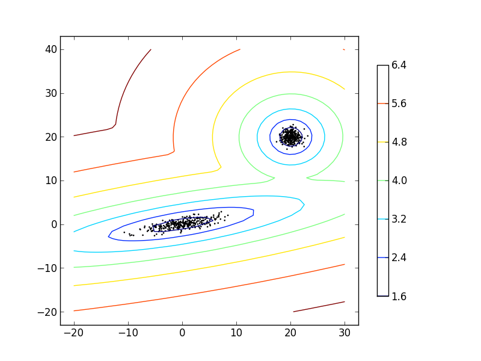

4.1. Gaussian mixture models¶
sklearn.mixture is a package which enables one to learn Gaussian Mixture Models (diagonal, spherical, tied and full covariance matrices supported), sample them, and estimate them from data. Facilities to help determine the appropriate number of components are also provided.
Two-component Gaussian mixture model: data points, and equi-probability surfaces of the model.
A Gaussian mixture model is a probabilistic model that assumes all the data points are generated from a mixture of a finite number of Gaussian distributions with unknown parameters. One can think of mixture models as generalizing k-means clustering to incorporate information about the covariance structure of the data as well as the centers of the latent Gaussians.
The scikit-learn implements different classes to estimate Gaussian mixture models, that correspond to different estimation strategies, detailed below.
4.1.1. GMM classifier¶
The GMM object implements the expectation-maximization (EM) algorithm for fitting mixture-of-Gaussian models. It can also draw confidence ellipsoids for multivariate models, and compute the Bayesian Information Criterion to assess the number of clusters in the data. A GMM.fit method is provided that learns a Gaussian Mixture Model from train data. Given test data, it can assign to each sample the class of the Gaussian it mostly probably belong to using the GMM.predict method.
The GMM comes with different options to constrain the covariance of the difference classes estimated: spherical, diagonal, tied or full covariance.

Examples:
- See GMM classification for an example of using a GMM as a classifier on the iris dataset.
- See Density Estimation for a mixture of Gaussians for an example on plotting the density estimation.
4.1.1.1. Pros and cons of class GMM: expectation-maximization inference¶
4.1.1.1.1. Pros¶
| Speed: | it is the fastest algorithm for learning mixture models |
|---|---|
| Agnostic: | as this algorithm maximizes only the likelihood, it will not bias the means towards zero, or bias the cluster sizes to have specific structures that might or might not apply. |
4.1.1.1.2. Cons¶
| Singularities: | when one has insufficiently many points per mixture, estimating the covariance matrices becomes difficult, and the algorithm is known to diverge and find solutions with infinite likelihood unless one regularizes the covariances artificially. |
|---|---|
| Number of components: | |
| this algorithm will always use all the components it has access to, needing held-out data or information theoretical criteria to decide how many components to use in the absence of external cues. | |
4.1.1.2. Selecting the number of components in a classical GMM¶
The BIC criterion can be used to select the number of components in a GMM in an efficient way. In theory, it recovers the true number of components only in the asymptotic regime (i.e. if much data is available). Note that using a DPGMM avoids the specification of the number of components for a Gaussian mixture model.
Examples:
- See Gaussian Mixture Model Selection for an example of model selection performed with classical GMM.
4.1.1.3. Estimation algorithm Expectation-maximization¶
The main difficulty in learning Gaussian mixture models from unlabeled data is that it is one usually doesn’t know which points came from which latent component (if one has access to this information it gets very easy to fit a separate Gaussian distribution to each set of points). Expectation-maximization is a well-fundamented statistical algorithm to get around this problem by an iterative process. First one assumes random components (randomly centered on data points, learned from k-means, or even just normally distributed around the origin) and computes for each point a probability of being generated by each component of the model. Then, one tweaks the parameters to maximize the likelihood of the data given those assignments. Repeating this process is guaranteed to always converge to a local optimum.
4.1.2. VBGMM classifier: variational Gaussian mixtures¶
The VBGMM object implements a variant of the Gaussian mixture model with variational inference algorithms. The API is identical to GMM. It is essentially a middle-ground between GMM and DPGMM, as it has some of the properties of the Dirichlet process.
4.1.2.1. Pros and cons of class VBGMM: variational inference¶
4.1.2.1.1. Pros¶
| Regularization: | due to the incorporation of prior information, variational solutions have less pathological special cases than expectation-maximization solutions. One can then use full covariance matrices in high dimensions or in cases where some components might be centered around a single point without risking divergence. |
|---|
4.1.2.1.2. Cons¶
| Bias: | to regularize a model one has to add biases. The variational algorithm will bias all the means towards the origin (part of the prior information adds a “ghost point” in the origin to every mixture component) and it will bias the covariances to be more spherical. It will also, depending on the concentration parameter, bias the cluster structure either towards uniformity or towards a rich-get-richer scenario. |
|---|---|
| Hyperparameters: | |
| this algorithm needs an extra hyperparameter that might need experimental tuning via cross-validation. | |
4.1.2.2. Estimation algorithm: variational inference¶
Variational inference is an extension of expectation-maximization that maximizes a lower bound on model evidence (including priors) instead of data likelihood. The principle behind variational methods is the same as expectation-maximization (that is both are iterative algorithms that alternate between finding the probabilities for each point to be generated by each mixture and fitting the mixtures to these assigned points), but variational methods add regularization by integrating information from prior distributions. This avoids the singularities often found in expectation-maximization solutions but introduces some subtle biases to the model. Inference is often notably slower, but not usually as much so as to render usage unpractical.
Due to its Bayesian nature, the variational algorithm needs more hyper-parameters than expectation-maximization, the most important of these being the concentration parameter alpha. Specifying a high value of alpha leads more often to uniformly-sized mixture components, while specifying small (between 0 and 1) values will lead to some mixture components getting almost all the points while most mixture components will be centered on just a few of the remaining points.
4.1.3. DPGMM classifier: Infinite Gaussian mixtures¶
The DPGMM object implements a variant of the Gaussian mixture model with a variable (but bounded) number of components using the Dirichlet Process. The API is identical to GMM. This class doesn’t require the user to choose the number of components, and at the expense of extra computational time the user only needs to specify a loose upper bound on this number and a concentration parameter.

The examples above compare Gaussian mixture models with fixed number of components, to DPGMM models. On the left the GMM is fitted with 5 components on a dataset composed of 2 clusters. We can see that the DPGMM is able to limit itself to only 2 components whereas the GMM fits the data fit too many components. Note that with very little observations, the DPGMM can take a conservative stand, and fit only one component. On the right we are fitting a dataset not well-depicted by a mixture of Gaussian. Adjusting the alpha parameter of the DPGMM controls the number of components used to fit this data.
Examples:
- See Gaussian Mixture Model Ellipsoids for an example on plotting the confidence ellipsoids for both GMM and DPGMM.
- Gaussian Mixture Model Sine Curve shows using GMM and DPGMM to fit a sine wave
4.1.3.1. Pros and cons of class DPGMM: Diriclet process mixture model¶
4.1.3.1.1. Pros¶
| Less sensitivity to the number of parameters: | |
|---|---|
| unlike finite models, which will almost always use all components as much as they can, and hence will produce wildly different solutions for different numbers of components, the Dirichlet process solution won’t change much with changes to the parameters, leading to more stability and less tuning. | |
| No need to specify the number of components: | |
| only an upper bound of this number needs to be provided. Note however that the DPMM is not a formal model selection procedure, and thus provides no guarantee on the result. | |
4.1.3.1.2. Cons¶
| Speed: | the extra parametrization necessary for variational inference and for the structure of the Dirichlet process can and will make inference slower, although not by much. |
|---|---|
| Bias: | as in variational techniques, but only more so, there are many implicit biases in the Dirichlet process and the inference algorithms, and whenever there is a mismatch between these biases and the data it might be possible to fit better models using a finite mixture. |
4.1.3.2. The Dirichlet Process¶
Here we describe variational inference algorithms on Dirichlet process mixtures. The Dirichlet process is a prior probability distribution on clusterings with an infinite, unbounded, number of partitions. Variational techniques let us incorporate this prior structure on Gaussian mixture models at almost no penalty in inference time, comparing with a finite Gaussian mixture model.
An important question is how can the Dirichlet process use an infinite, unbounded number of clusters and still be consistent. While a full explanation doesn’t fit this manual, one can think of its chinese restaurant process analogy to help understanding it. The chinese restaurant process is a generative story for the Dirichlet process. Imagine a chinese restaurant with an infinite number of tables, at first all empty. When the first customer of the day arrives, he sits at the first table. Every following customer will then either sit on an occupied table with probability proportional to the number of customers in that table or sit in an entirely new table with probability proportional to the concentration parameter alpha. After a finite number of customers has sat, it is easy to see that only finitely many of the infinite tables will ever be used, and the higher the value of alpha the more total tables will be used. So the Dirichlet process does clustering with an unbounded number of mixture components by assuming a very asymmetrical prior structure over the assignments of points to components that is very concentrated (this property is known as rich-get-richer, as the full tables in the Chinese restaurant process only tend to get fuller as the simulation progresses).
Variational inference techniques for the Dirichlet process still work with a finite approximation to this infinite mixture model, but instead of having to specify a priori how many components one wants to use, one just specifies the concentration parameter and an upper bound on the number of mixture components (this upper bound, assuming it is higher than the “true” number of components, affects only algorithmic complexity, not the actual number of components used).
Derivation:
- See here the full derivation of this algorithm.